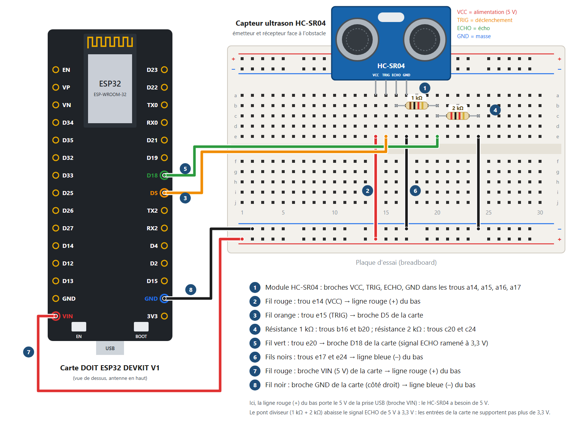
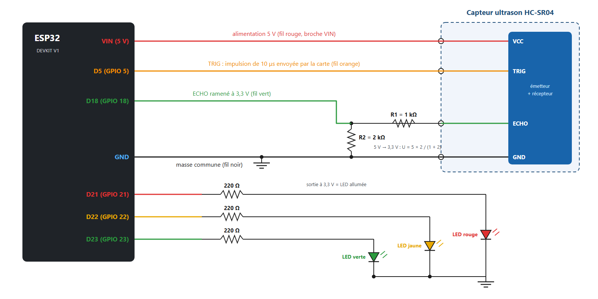
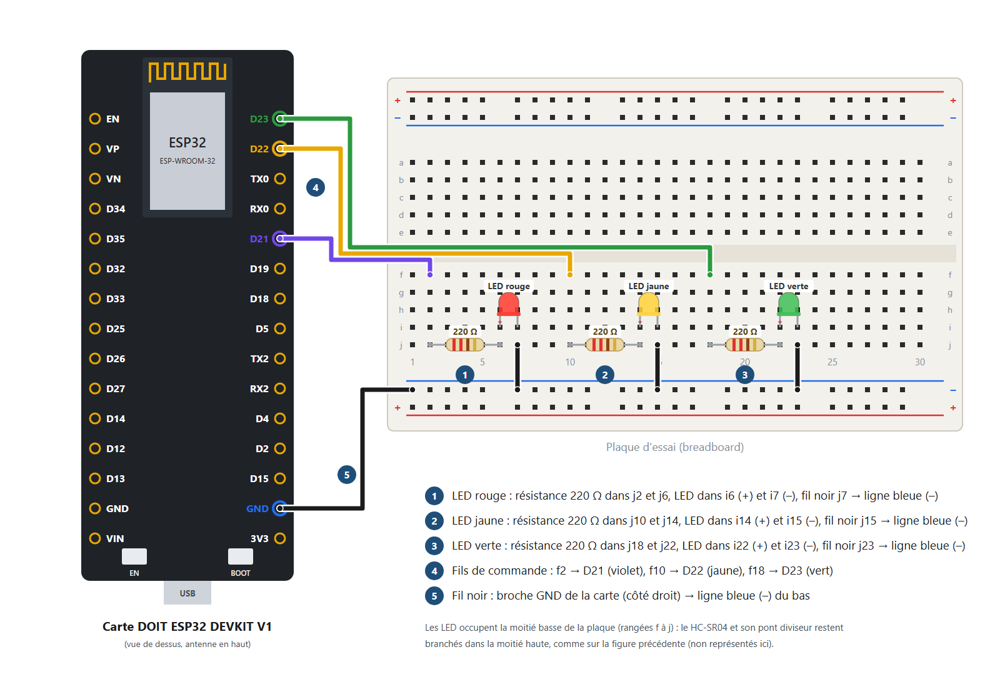

TP – Mesurer une distance avec le capteur ultrason HC-SR04 et l'afficher sur une page web
Mesurer une distance avec le capteur HC-SR04 : votre programme de mesure dans l'Arduino IDE, un espace de travail de robot à trois LED, puis le serveur web créé avec le générateur de tableau de bord, et l'étude de l'erreur de mesure.
HC-SR04UltrasonsServeur webTableur
1. Objectifs
Comprendre comment le capteur HC-SR04 mesure une distance avec des ultrasons.
Réaliser le câblage du capteur, avec son pont diviseur, puis de trois LED.
Écrire et tester votre programme de mesure dans l'Arduino IDE.
Simuler l'espace de travail d'un robot mobile : une LED rouge, jaune ou verte s'allume selon la distance de l'obstacle.
Créer le serveur web avec le générateur de tableau de bord : jauge, voyants, courbe et fichier CSV.
Déterminer l'erreur de mesure du capteur avec un tableur.
Les schémas de câblage et le schéma électrique de cette fiche.
Votre travail : le câblage, vos programmes de mesure et de l'espace de travail, la création du serveur web avec le générateur, les tests, l'étude de l'erreur de mesure et les questions.
2. Matériel
Matériel
Remarque
1 carte DOIT ESP32 DEVKIT V1 + câble micro-USB
Le câble doit permettre le transfert de données (pas seulement la charge)
1 capteur ultrason HC-SR04
4 broches : VCC, TRIG, ECHO, GND. Il s'alimente en 5 V
1 résistance de 1 kΩ et 1 résistance de 2 kΩ
Le pont diviseur du signal ECHO (marron-noir-rouge et rouge-noir-rouge)
3 LED (rouge, jaune, verte) + 3 résistances de 220 Ω
Pour l'espace de travail du robot (partie 6)
1 plaque d'essai + fils mâle-femelle et mâle-mâle
Côté femelle : sur les broches de la carte ; côté mâle : dans la plaque d'essai
1 réglet (ou un mètre) et un obstacle plat (livre, carton)
Pour connaître la distance réelle de l'obstacle
1 ordinateur avec l'Arduino IDE
Les cartes ESP32 sont déjà installées
1 smartphone (ou l'ordinateur) avec un navigateur web
Connecté au même réseau Wi-Fi que la carte
Un tableur (Excel ou LibreOffice Calc)
Pour étudier l'erreur de mesure
3. Le capteur ultrason HC-SR04
Le capteur HC-SR04 mesure la distance d'un obstacle grâce aux ultrasons. Le module contient un émetteur et un récepteur d'ultrasons, et une puce qui les pilote.
Le principe repose entièrement sur la vitesse du son. Une mesure se déroule ainsi :
La carte envoie une impulsion HIGH de 10 µs sur la broche TRIGGER (TRIG) du capteur.
Le capteur émet une série de 8 impulsions ultrasonores à 40 kHz (inaudibles pour l'oreille humaine).
Les ultrasons se propagent dans l'air jusqu'à l'obstacle, puis reviennent vers le capteur.
Le capteur détecte l'écho et termine la mesure.
La broche ECHO reste à HIGH pendant les étapes 3 et 4 : sa durée est celle de l'aller-retour des ultrasons. La carte mesure cette durée et en déduit la distance.
Calculer la distance
Le son parcourt environ 343 m/s dans l'air à 20 °C, soit 0,343 mm par microseconde.
La durée mesurée correspond à un aller-retour : la distance de l'obstacle est la moitié du chemin parcouru.
Distance (mm) = durée (µs) × 0,343 / 2
Caractéristiques techniques
Caractéristique
Valeur
Tension d'alimentation
5 V
Consommation
environ 20 mA en fonctionnement
Portée
de 2 cm à 4 m en théorie ; de 10 cm à 2,5 m pour de bons résultats
Angle de mesure
moins de 15°
Fréquence des ultrasons
40 kHz
Signal ECHO
5 V quand il est à HIGH : il faut l'abaisser à 3,3 V pour la carte
4. Le câblage
Rappels
Le HC-SR04 s'alimente en 5 V : la broche VIN de la carte fournit le 5 V de la prise USB.
La broche ECHO renvoie 5 V, alors que les entrées de la carte ne supportent que 3,3 V : le pont diviseur (1 kΩ et 2 kΩ) abaisse ce signal à 3,3 V.
Sur la plaque d'essai, les 5 trous d'une même colonne (a à e, ou f à j) sont reliés entre eux.
Réalisez tout le câblage carte débranchée.
Schéma de câblage

Figure 3 – Câblage du capteur HC-SR04 et de son pont diviseur (les numéros correspondent à la légende)
Schéma électrique

Figure 4 – Schéma électrique : capteur HC-SR04, pont diviseur et trois LED (les LED servent à la partie 6)
Étapes
Capteur HC-SR04 : broches VCC, TRIG, ECHO, GND dans les trous a14, a15, a16, a17, émetteur et récepteur face à vous.
Fil rouge : du trou e14 (VCC) à la ligne rouge (+) du bas.
Fil orange : du trou e15 (TRIG) à la broche D5 de la carte.
Résistance 1 kΩ dans les trous b16 et b20 ; résistance 2 kΩ dans les trous c20 et c24.
Fil vert : du trou e20 à la broche D18 de la carte (signal ECHO ramené à 3,3 V).
Fils noirs : des trous e17 et e24 à la ligne bleue (–) du bas.
Fil rouge : de la broche VIN (5 V) de la carte à la ligne rouge (+) du bas.
Fil noir : de la broche GND de la carte (côté droit) à la ligne bleue (–) du bas.
Attention
Ne reliez jamais la broche ECHO directement à la carte : 5 V sur une entrée prévue pour 3,3 V peut l'abîmer.
Ici, la ligne rouge (+) du bas porte du 5 V : n'y branchez pas de composant prévu pour 3,3 V.
Faites vérifier votre câblage par l'enseignant avant de brancher la carte.
Câblage vérifié
5. Mesurer avec votre programme dans l'Arduino IDE
Avant de créer le serveur web, vérifiez votre câblage et le capteur avec un programme que vous écrivez vous-même : il affiche la distance dans le moniteur série.
Branchez la carte à l'ordinateur avec le câble micro-USB.
Créez un nouveau croquis, Mesure_HCSR04 (Fichier > Nouveau croquis). Choisissez la carte (Outils > Carte > esp32 > DOIT ESP32 DEVKIT V1) et le port (Outils > Port).
Écrivez le programme : toutes les 0,5 s, la carte déclenche une mesure et affiche la distance en millimètres dans le moniteur série. Aide : déclarez TRIG (broche 5) en sortie et ECHO (broche 18) en entrée avec pinMode() ; l'impulsion de déclenchement s'obtient avec digitalWrite(trig, LOW), delayMicroseconds(2), digitalWrite(trig, HIGH), delayMicroseconds(10), digitalWrite(trig, LOW) ; pulseIn(echo, HIGH) renvoie ensuite la durée de l'écho en microsecondes.
Calculez la distance avec la formule de la partie 3, et affichez-la avec Serial.print().
Téléversez (flèche →) et ouvrez le Moniteur série à 115200 bauds. Si le téléversement bloque sur « Connecting… », maintenez le bouton BOOT enfoncé jusqu'au début du transfert.
Placez l'obstacle à 100 mm, 200 mm puis 300 mm du capteur, mesurés au réglet, et comparez avec la distance affichée.
Une distance s'affiche toutes les 0,5 s
La distance affichée est proche de la distance réelle
Notez sur votre feuille les distances affichées pour 100, 200 et 300 mm.
6. L'espace de travail d'un robot mobile
On simule l'espace de travail d'un robot mobile : le capteur détecte la distance d'un objet, et trois LED indiquent la zone où il se trouve.
La LED rouge s'allume quand la distance est strictement inférieure à 60 mm.
La LED jaune s'allume quand la distance est comprise entre 60 et 120 mm.
La LED verte s'allume quand la distance est strictement supérieure à 120 mm.

Figure 5 – Câblage des trois LED, dans la moitié basse de la plaque (le capteur reste branché)
Débranchez la carte et câblez les trois LED comme sur la figure 5, sans toucher au capteur : LED rouge sur D21, LED jaune sur D22, LED verte sur D23.
Faites vérifier le câblage, puis rebranchez la carte.
Complétez votre programme : après chaque mesure, allumez la LED de la zone et éteignez les deux autres. Aide : if (distance < 60) { … } else if (distance <= 120) { … } else { … } ; digitalWrite(broche, HIGH) allume une LED.
Avec le réglet, placez l'obstacle dans chaque zone et vérifiez la LED allumée.
La LED rouge s'allume sous 60 mm
La LED jaune s'allume entre 60 et 120 mm
La LED verte s'allume au-delà de 120 mm
7. Créer le serveur web avec le générateur de tableau de bord
Le programme du serveur web, vous le créez sans le programmer, avec le générateur de tableau de bord : vous choisissez ce que la page affiche, et le générateur écrit le programme. Il sait aussi allumer les LED automatiquement selon la distance.
Ma carte : saisissez le Wi-Fi. Ajoutez un Capteur ultrason HC-SR04 : TRIG sur D5, ECHO sur D18, distance en mm, de 0 à 500 mm. Choisissez une mesure toutes les 1 s.
Ajoutez trois sorties : « LED rouge » sur D21, « LED jaune » sur D22, « LED verte » sur D23. Pour chacune, choisissez la commande « Automatique, selon une mesure », la mesure « Distance », et la condition de la partie 6 (inférieure à 60, comprise entre 60 et 120, supérieure à 120).
Apparence : choisissez le rechargement automatique toutes les 2 s.
Blocs : ajoutez un titre (« Espace de travail du robot »), une forme pour la distance (jauge, réservoir, grand chiffre… à vous de choisir), un voyant pour chaque LED, la courbe de la distance, les informations de la carte et le téléchargement CSV.
Testez dans l'aperçu : bougez le curseur de la distance et regardez les voyants changer.
Cliquez sur Télécharger le programme, ouvrez le fichier .ino dans l'Arduino IDE et téléversez-le. Si le téléchargement ne démarre pas, utilisez « Copier le programme » et collez-le dans un nouveau croquis.
Ouvrez le Moniteur série (115200 bauds) et appuyez sur le bouton EN : l'adresse IP s'affiche, puis une mesure par seconde.
Notez sur votre feuille l'adresse IP de votre carte (par exemple 192.168.1.42) : vous en aurez besoin pour ouvrir la page.
L'adresse IP s'affiche dans le moniteur série, puis une mesure par seconde
8. Tester
Connectez le téléphone (ou l'ordinateur) au même réseau Wi-Fi que la carte.
Dans le navigateur, tapez http:// suivi de l'adresse IP de la carte (par exemple http://192.168.1.42).
Déplacez l'obstacle devant le capteur : observez la page, les voyants et les LED de la plaque.
Fermez la page et déplacez encore l'obstacle : les LED de la plaque changent-elles toujours ?
La distance affichée suit l'obstacle
Les voyants de la page et les LED de la plaque indiquent la même zone
Les LED fonctionnent même quand la page est fermée
9. Déterminer l'erreur de mesure du HC-SR04
Placez l'obstacle tous les 10 mm, de 20 à 500 mm, mesurés au réglet. Pour chaque position, attendez quelques mesures, puis notez la distance réelle et la distance affichée.
Vous pouvez aussi télécharger le fichier CSV de la page : il contient toutes les mesures, avec l'instant de chacune.
Dans le tableur, calculez pour chaque position l'erreur (distance mesurée – distance réelle) et l'erreur relative en % (erreur / distance réelle × 100).
Tracez un graphique de l'erreur en %, en fonction de la distance réelle.
Tracez le graphique de linéarité du capteur : distance mesurée en fonction de la distance réelle, sur 20 à 500 mm. Ajoutez la droite y = x pour comparer.
Les deux graphiques sont réalisés
10. Questions de compréhension
Pourquoi divise-t-on par 2 la durée de l'écho pour calculer la distance ?
Le capteur mesure une durée d'écho de 1 200 µs. À quelle distance se trouve l'obstacle ?
Pourquoi faut-il un pont diviseur sur la broche ECHO, mais pas sur la broche TRIG ? Calculez la tension obtenue avec 1 kΩ et 2 kΩ.
Dans le programme du serveur web, qui allume les LED : la page web ou la carte ? Que se passe-t-il quand personne n'ouvre la page ?
Que renvoie pulseIn() quand aucun obstacle ne renvoie d'écho ? Comment le programme créé par le générateur évite-t-il d'afficher 0 ?
D'après votre étude de l'erreur, sur quelle plage de distances le capteur est-il le plus fiable ? Proposez une explication aux écarts en dehors de cette plage.
La vitesse du son dépend de la température : 331 m/s à 0 °C, 343 m/s à 20 °C. Quelle erreur commet-on à 0 °C pour un obstacle à 300 mm, si le programme garde 343 m/s ?
Maintenance : on veut surveiller le niveau d'huile d'une cuve avec ce capteur, placé au-dessus. Que mesure-t-il exactement ? Comment en déduire la hauteur d'huile ?
11. Pour aller plus loin
A. Afficher la distance sur un écran LCD (I2C)
Branchez un écran LCD I2C (SDA sur D21 et SCL sur D22 : déplacez alors les LED jaune et rouge sur d'autres broches) et installez la bibliothèque LiquidCrystal I2C.
Modifiez votre programme de la partie 5 pour afficher la distance sur l'écran, en plus du moniteur série.
B. Corriger la vitesse du son avec la température
Ajoutez le module DHT11 du TP 05 et calculez la vitesse du son : v (m/s) = 331,3 + 0,606 × température (°C).
Utilisez cette vitesse dans le calcul de la distance, et comparez avec la valeur à 343 m/s.
12. En cas de problème
Problème
Solution
La carte n'apparaît pas dans Outils > Port
Vérifier le câble micro-USB (données), installer le pilote USB (CP210x), changer de port USB.
Le téléversement bloque sur « Connecting… »
Maintenir le bouton BOOT enfoncé au début du téléversement.
La distance affichée vaut toujours 0
Vérifier l'alimentation 5 V (fil VIN → ligne rouge), les broches TRIG (D5) et ECHO (D18) dans le câblage et le programme, et le pont diviseur.
La distance saute ou est fausse
Obstacle trop petit, trop loin, mou (tissu) ou de biais : utiliser un obstacle plat, face au capteur, entre 10 cm et 2,5 m.
Des points s'affichent sans fin dans le moniteur série
La carte ne trouve pas le réseau Wi-Fi : vérifier le nom et le mot de passe saisis dans le générateur, puis prévenir l'enseignant.
Rien ne s'affiche dans le moniteur série
Régler la vitesse sur 115200 bauds, puis appuyer sur EN.
Une LED ne s'allume jamais
Vérifier sa broche (D21, D22 ou D23), le sens de la LED, sa résistance et sa liaison à la ligne bleue (–).
La page ne s'ouvre pas
Vérifier que le téléphone est sur le même Wi-Fi et que l'adresse commence par http:// (et non https://).